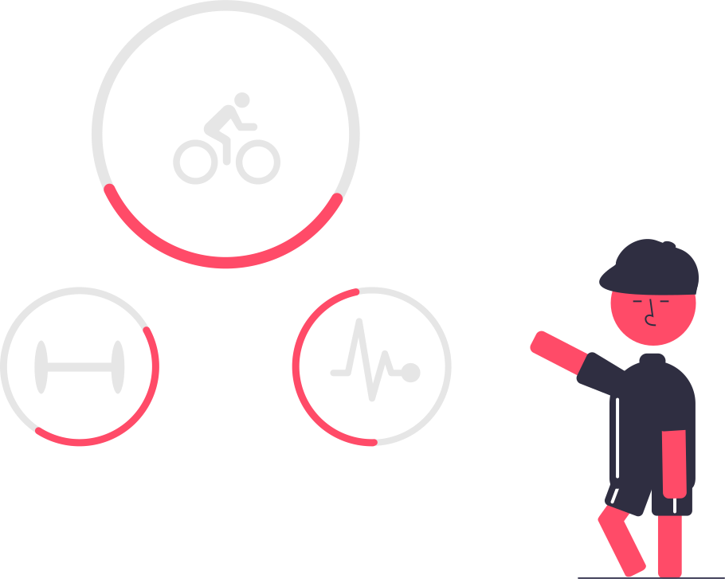

Costumes e práticas que podem te levar a uma vida mais saudável
Atividades Físicas
São muitas as emoções presentes no nosso cotidiano: estresse, ansiedade, angústia preocupações em excesso, insatisfações, nervosismo. Saber lidar com todos esses sentimentos é fundamental para a saúde mental.
Afinal, uma pessoa mentalmente saudável é capaz de encarar os desafios e as mudanças do dia a dia com equilíbrio, reconhece quais são os seus limites e busca ajuda quando necessário.
Para manter uma boa saúde mental, é preciso cuidar bem do seu corpo, isto é, dormir bem, alimentar-se de forma adequada e praticar exercício físico regularmente.
Atividade física: uma grande aliada da saúde mental
A prática de atividade física, por exemplo, proporciona uma sensação de bem-estar e relaxamento.
Quando nos exercitamos, o nosso corpo libera endorfina, substância natural produzida pelo cérebro durante e após a realização de uma atividade física.A liberação de endorfina – também conhecida como hormônio da alegria – ajuda a relaxar, reduz o estresse e a ansiedade e melhora o humor.
Dieta saudável
Se alimentar de forma saudável e equilibrada é essencial para garantir qualidade de vida. Isso porque, além de fornecer energia e bem-estar geral, através de uma boa alimentação é possível prevenir e combater doenças, manter o peso corporal saudável e ter um bom desenvolvimento físico.
Um cardápio balanceado ajuda o sistema imunológico; melhora o humor e a memória; reduz o cansaço e o estresse; aumenta a qualidade do sono; previne o envelhecimento precoce da pele; melhora o sistema digestivo; e fornece disposição e mais energia para as atividades diárias.
Uma alimentação saudável requer quantidades certas, sem exageros e também sem exclusões e alimentos que forneçam ao corpo: proteínas, carboidratos, gorduras, fibras, cálcio vitaminas e outros minerais. A diversidade de grãos, verduras, legumes e frutas deve fazer parte das refeições do dia a dia. É importante também evitar o consumo de alimentos industrializados. Na maioria das vezes, eles são compostos de substâncias que prejudicam o nosso organismo, como corantes, conservantes, sódio e açúcar em grandes quantidades.
Outras dicas importantes são: ter horários para se alimentar; substituir biscoitos e bolachas por frutas; optar por farinha integral, no lugar da branca, valendo para o consumo de bolos, pães e massas; incluir gorduras saudáveis como coco, abacate, manteiga ou ghee, castanhas, cacau e ômega 3; e evitar frituras.